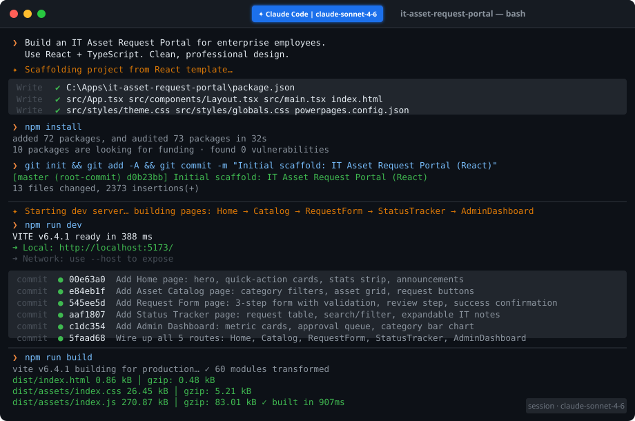

A behind-the-scenes look at shipping a modern enterprise web app using AI-assisted development and Microsoft's Power Platform
Anyone who has worked in a mid-sized or large organisation knows the frustration: you need a new laptop, a monitor, or a software license, and suddenly you're composing an email to IT, following up on a Teams message, and three weeks later still not sure whether your request was even received.
At EPMPoint, we had exactly that problem. Our IT team was managing asset requests through a mix of emails, spreadsheets, and verbal approvals — a process that worked when the company was small but was showing serious cracks as we scaled. Requests got lost. Priorities were unclear. And neither employees nor IT admins had any real visibility into the status of open requests.
We needed a dedicated IT Asset Request Portal: a clean, professional web application where employees could browse available assets, submit structured requests, track their status in real time, and where IT admins could manage the approval queue in one place.
What we didn't want was a six-week project. So we set a challenge for ourselves: could we build and deploy a fully functional, production-quality enterprise portal in a matter of days?
The answer, it turns out, was yes — and the way we got there says a lot about where enterprise software development is heading.
From the outset, we knew we wanted to deploy on Microsoft Power Pages. EPMPoint already works extensively within the Microsoft Power Platform ecosystem, and Power Pages gave us enterprise-grade hosting, Dataverse integration, and built-in security — without the operational overhead of managing our own infrastructure.
Power Pages recently introduced support for code sites: single-page applications (SPAs) built with modern frameworks like React, Angular, or Vue, deployed directly to the Power Pages runtime. This was a game changer. Instead of being constrained to Liquid templates and drag-and-drop studio tools, we could write real component-based React code and deploy it to a fully managed Microsoft-hosted environment.
Our final technology choices:
| Layer | Technology | Reason |
|---|---|---|
| Frontend Framework | React 18 + TypeScript | Type safety, component reusability, mature ecosystem |
| Build Tool | Vite | Fast HMR, optimised production builds, minimal config |
| Routing | React Router v7 | Client-side routing with clean URL structure |
| Hosting | Microsoft Power Pages | Managed infrastructure, Dataverse integration, enterprise security |
| Deployment CLI | Power Platform CLI (PAC CLI) v1.44 | Direct upload-code-site command for SPA deployment |
| Development Assistant | Claude Code (Anthropic) | AI pair programmer — scaffolding, implementation, debugging |
If I'm honest, the most significant factor in how quickly we shipped this project wasn't any particular framework choice — it was Claude Code.
Claude Code is an AI coding assistant from Anthropic that integrates directly into your terminal and development environment. Unlike typical AI chat assistants where you copy-paste code back and forth, Claude Code operates natively in your codebase: it reads files, writes files, runs build commands, checks for TypeScript errors, and iterates — all without you needing to manage the context manually.
For our Power Pages portal, we used a purpose-built plugin that added Power Pages-specific skills directly to Claude Code. We started with a natural language description of what we wanted to build:
From there, Claude Code ran through a systematic process: it discovered what we needed, scaffolded the entire project from a template, started a live development server, implemented each page and component, verified the output via accessibility snapshots, committed the work to Git at each milestone, and ultimately handled the entire deployment flow to Power Pages — including upgrading the PAC CLI to the correct version and unblocking JavaScript file uploads in our Dataverse environment.
What would typically take a developer team a week or more of back-and-forth was compressed into a focused session. But it's important to be clear about what this means: AI didn't replace the development process — it accelerated it. We still made architectural decisions, reviewed every component, caught design issues, and directed the overall vision. Claude Code handled the execution of those decisions with speed and consistency that would be difficult for any individual developer to match.

The portal is a single-page application with five distinct routes, all served from a single index.html entry point hosted on Power Pages. Here's the high-level structure:
| Route | Page | Purpose |
|---|---|---|
/ |
Home | Landing page with feature overview and quick actions |
/catalog |
Asset Catalog | Browseable inventory with category filters and request buttons |
/request |
Request Form | 3-step submission form with validation and confirmation |
/status |
Status Tracker | Employee view of submitted requests with search and filter |
/admin |
Admin Dashboard | IT admin view with approval queue and metrics |
All styling is done via plain CSS with a custom design token system — CSS custom properties for colours, spacing, typography, and border radii. This keeps the codebase lean (no CSS-in-JS overhead) while maintaining a consistent visual language across every component. The design system includes light animation utilities (animate-in with staggered animation-delay) that give the UI a polished, alive feeling without being distracting.
The home page serves two purposes: it orients first-time visitors and provides quick navigation paths for returning users. The design uses a two-column layout with a prominent headline, a brief value proposition, and three call-to-action cards that link to the Catalog, the Request Form, and the Status Tracker.
We also added a stats strip — Total Assets, Avg. Fulfillment Time, and Satisfaction Rate — to give the page credibility and make the portal feel like a living, maintained system rather than a static brochure.

The catalog page displays all available IT assets in a responsive card grid, with category filter tabs across the top (All Assets, Laptops, Monitors, Peripherals, Software). Clicking a filter instantly narrows the grid with no page reload — a simple but effective piece of UX that makes browsing feel fast.
Each asset card shows an SVG category icon on a colour-coded gradient background (blue for laptops, purple for monitors, green for peripherals, amber for software), the asset name, a technical specs summary, a description, and a "Request This" button. Cards for out-of-stock items display an "Out of stock" tag and disable the request button.
One interesting design decision: we deliberately chose to use SVG illustrations rather than product photography. For an enterprise asset catalog, category icons communicate faster and more cleanly than stock photos, and they never have the problem of being outdated when product lines change.

The request form is probably the most technically interesting component in the portal. It's a three-step multi-stage form, with a progress indicator at the top:
The form includes client-side validation at every step: required field checks, quantity bounds, and character limits on the justification text. Navigating to the catalog and clicking "Request This" on any asset pre-populates the asset type field via URL query parameters — a small but meaningful quality-of-life feature that removes friction from the most common user flow.
 and Step 3 (Confirmation screen with generated Request ID).png)
The status tracker gives employees a self-service way to check the progress of their submitted requests without emailing IT. It features a live search bar (filtering by Request ID, asset name, or category), status filter buttons (Pending, Approved, Fulfilled, Rejected), and an expandable "Details" row that reveals the IT admin's note for each actioned request.
The expandable note row is a particularly useful feature: it lets IT admins communicate delivery timelines, rejection reasons, or follow-up instructions inline, without requiring a separate notification system.
The admin dashboard is designed for the IT team, not for employees. At the top, four metric cards give an at-a-glance view of total requests, pending approvals, approved/fulfilled count, and average fulfillment time. Below that is the approval queue — a full data table of all requests — and a sidebar showing a horizontal bar chart of requests by category.
Each pending request has an Approve and Reject button. Clicking either triggers an inline status update (no page reload) and shows a dismissible notification banner at the top of the page confirming the action. Requests that have already been actioned show a dash in the actions column, keeping the UI uncluttered.

The design brief was simple: this is an internal enterprise tool, not a marketing site. It should feel trustworthy, be fast to navigate, and get out of the way of the task at hand.
We chose a blue-anchored palette — #1a56db as the primary — with generous white space, subtle card shadows, and a monospace font for IDs, dates, and technical values. This creates a clear visual hierarchy between informational content and interactive elements without being heavy-handed.
Accessibility was treated as a requirement, not an afterthought:
aria-label attributesscope="col" headersaria-pressed statesaria-liveThe result is a portal that looks contemporary and polished while meeting the functional and accessibility standards you'd expect from a production enterprise application.
Deploying to Power Pages used to require a working knowledge of Dataverse configuration, portal management, and the nuances of the PAC CLI. With Claude Code handling the deployment flow, the process became a guided conversation.
The deployment sequence, end to end:
npm run build compiles the React app to a dist/ folder (three files: an HTML entry point, a CSS bundle, and a JS bundle)upload-code-site support.js file uploads as a security measure. Claude Code used pac env update-settings to remove js from the blocked attachments list after confirming with us firstpac pages upload-code-site --rootPath . pushed the compiled assets and created all the necessary Power Pages records (web files, web pages, web templates)Total deployment time from a clean build to a live URL: under five minutes.

The most common misconception about tools like Claude Code is that they automate away the need for engineering judgment. In our experience, the opposite is true: you need more clarity of thought, not less. Claude Code executes with precision on whatever you specify, which means vague briefs produce vague results. Clear product thinking — knowing what you're building, for whom, and why — is more important than ever.
The ability to deploy a React SPA directly to Power Pages changes the calculus for internal tooling. You get the development ergonomics of a modern JavaScript framework with the operational simplicity and security posture of the Microsoft Power Platform. For teams already in the Microsoft ecosystem, this is a genuinely compelling option.
Setting up CSS custom properties for colours, spacing, and typography at the start of the project paid off throughout. Every component could use the same variables, and making a global design change — like adjusting the primary colour or the base spacing unit — required changing one value, not hunting through dozens of files.
Because we built accessibility in from the start (ARIA attributes, semantic HTML, keyboard navigation), there was no costly remediation phase at the end. Every component was accessible by the time it was committed.
The current portal is a fully functional frontend with mock data. The natural next steps are:
Each of these is achievable within the Power Platform ecosystem — Dataverse for storage, Power Automate for workflows, Power BI for analytics — all without leaving the Microsoft toolchain we already use.
Building the IT Asset Request Portal reminded us that the bottleneck in enterprise software development is rarely talent — it's time and coordination. The combination of a clear product vision, a modern frontend stack, Microsoft Power Pages as the deployment target, and Claude Code as an AI development partner compressed what would traditionally be a multi-week project into a focused, productive session.
The result is a portal that employees will actually use: fast, intuitive, accessible, and purpose-built for the task. And it's deployed on infrastructure that EPMPoint's IT team already knows how to manage.
If you're sitting on a backlog of internal tooling projects that "would be nice to have but there's never time," it might be worth reconsidering that assumption. The tools available today make some of those projects a lot more achievable than they used to be.
The code is maintainable, the architecture is extensible, and the foundation is solid. We're excited to keep building on it. The full source code is open source and available on GitHub — contributions and forks are welcome: github.com/rkneela0912/IT-Asset-Request-Portal